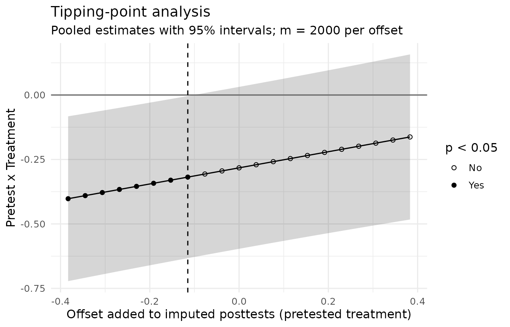

Worked Example: A Published Solomon Study
Source:vignettes/articles/worked-example.Rmd
worked-example.RmdMai et al. (2020) tested two interventions meant to help students apply what they learned in a time-management workshop:
- relapse prevention (RP);
- proximal plus distal goal setting (GS).
They published the individual data with the article under a Creative
Commons Attribution license, and solomonR bundles them as
mai2020 (see ?mai2020 for the design, the
variables, and the license). Because the published results can be
recomputed, each step below can be checked against the article. This
example follows the path of the site’s menus: check the design,
reproduce the published analysis, fit the recommended model, ask how
much the missing posttests could matter, and draft the report.
Acknowledgment. We thank Nu Nu Mai, Yoshi Takahashi, and Mon Mon Oo for making their data publicly available with their article. This example reanalyzes their data to teach the package. For the study itself, its interventions, its measures, and the authors’ conclusions, read the published article (Mai et al., 2020).
The design and the data
Final-year students at a management college took a three-hour workshop.
- Pretesting. Before the workshop they were “randomly assigned into either the pretested or unpretested groups based on their roll numbers” (Mai et al., 2020, p. 5). The article does not say how roll numbers were used.
- Interventions. After the workshop, participants in both pretest conditions were randomly assigned to RP, GS, or control (p. 6).
- Measures. Self-reported time-management behavior was measured before the workshop in the pretested groups and after it in all groups (p. 7).
Pretesting crossed with three conditions gives six groups. The authors analyzed three Solomon four-group designs, one for each pair of conditions, reusing groups across them (Table 2, pp. 4–5). This example analyzes the first pair, RP against control.
More than a third of the participants did not answer the posttest, and the share differed by group:
with(mai2020, table(condition, pretested, posttest = !is.na(post_behavior)))
#> , , posttest = FALSE
#>
#> pretested
#> condition 0 1
#> RP 9 11
#> GS 12 10
#> Control 13 23
#>
#> , , posttest = TRUE
#>
#> pretested
#> condition 0 1
#> RP 22 24
#> GS 15 23
#> Control 22 27
rp <- subset(mai2020, condition %in% c("RP", "Control"))
rp$treat <- as.integer(rp$condition == "RP")Check the design
validate_solomon() checks that the data have the
structure of a Solomon design, and check_solomon_missing()
separates the pretests that are absent by design from the scores that
were lost:
with(rp, check_solomon_missing(post_behavior, treat, pretested, pre_behavior))
#> Solomon missingness check
#> Pattern: structural pretest absence and incidental missingness
#>
#> Group Cell n Post missing Pre absent (design) Pre missing
#> 1 Pretested, treatment 35 11 0 0
#> 2 Pretested, control 50 23 0 0
#> 3 Unpretested, treatment 31 9 31 0
#> 4 Unpretested, control 35 13 35 0
#> Pre unexpected
#> 0
#> 0
#> 0
#> 0
#>
#> Structural pretest absence (n = 66)
#> Participants assigned to the unpretested groups were never pretested; the
#> absence of a pretest is the experimental manipulation.
#> Response: Do not impute. Use analyses that respect the design, such as
#> fit_solomon_glm(), fit_solomon_ml(), fit_solomon_classic(), or SEM.
#> Unlike planned missing-data designs, where unmeasured values exist and
#> can be imputed, an imputed pretest here would describe a measurement that
#> never occurred.
#> Sources: Solomon (1949); Graham et al. (2006)
#>
#> Incidental posttest missingness (n = 56)
#> Posttest scores are missing, so these participants are excluded from
#> complete-case analyses.
#> Response: Complete-case analysis is unbiased when missingness is unrelated
#> to the outcome given the variables in the model. Report missingness by
#> cell, because attrition that differs across the four groups can undermine
#> the randomized comparisons, and consider sensitivity analyses if
#> missingness may depend on the unobserved outcome.
#> Sources: Rubin (1976); Little & Rubin (2019)Two points follow for this study:
- Posttest attrition. It ranges from 29% to 46% across the four groups. A complete-case analysis is unbiased when missingness is unrelated to the outcome given the variables in the model (Little & Rubin, 2019). Attrition this uneven makes that assumption worth stating, and the numbers lost in each group belong in the report. The section “Missing posttests” below asks how much the conclusions depend on it.
- Baseline. Only the pretested arms can be compared at baseline:
with(rp, baseline_solomon(pre_behavior, treat, pretested))
#> Baseline comparison of the pretested arms
#> -----------------------------------------
#> Pretested, treatment n = 35, M = 3.15, SD = 0.35
#> Pretested, control n = 50, M = 3.13, SD = 0.34
#>
#> Difference: 0.02, 95% CI [-0.13, 0.17], t(83) = 0.26, p = .797
#> Hedges's g: 0.06, 95% CI [-0.38, 0.49] (noncentral t)
#>
#> The unpretested arms have no pretest, so their baseline cannot be checked
#> or adjusted for with the study's own data.The two arms hardly differed at pretest. Mai et al. (2020, p. 7) compared all three pretested groups with a one-way ANOVA, F = 0.78, p = .46, which the data reproduce:
summary(aov(pre_behavior ~ condition, data = subset(mai2020, pretested == 1)))
#> Df Sum Sq Mean Sq F value Pr(>F)
#> condition 2 0.193 0.09635 0.783 0.459
#> Residuals 115 14.149 0.12303The article prints F(2, 117). The data give 115 error degrees of freedom, which matches the 118 pretested participants of its Table 3 (p. 8).
Reproduce the published analysis
The authors followed the historical approach: a two-by-two ANOVA of
the posttests to check for pretest sensitization, a check for history
effects, and then an ANCOVA of the pretested groups (pp. 7–9).
fit_solomon_classic() runs these procedures, together with
the rest of the Test A–I sequence of Walton Braver and Braver
(1988):
classic <- with(rp, fit_solomon_classic(post_behavior, treat, pretested, pre_behavior))
classic
#> Classic Solomon analysis (historical teaching workflow)
#> -------------------------------------------------------
#> Selected pretested-group method: Test E (ancova)
#> Historical decision path (1988 flow): A -> D -> E -> H -> I
#>
#> Historical Tests A-I
#> --------------------
#> All tests are shown below. Tests marked [PATH] were reached by
#> the historical decision sequence for these data.
#>
#> [PATH] Test A: Pretest x Treatment interaction F(1, 91) = 3.46, p = 0.066
#> Test B: Treatment effect among pretested groups F(1, 91) = 2.91, p = 0.092
#> Test C: Treatment effect among unpretested groups F(1, 91) = 0.91, p = 0.342
#> [PATH] Test D: Treatment main effect F(1, 91) = 0.21, p = 0.645
#> [PATH] Test E: ANCOVA treatment effect F(1, 48) = 3.00, p = 0.090
#> Test F: Gain-score treatment effect F(1, 49) = 2.26, p = 0.139
#> Test G: Repeated-measures Treatment x Time interaction F(1, 49) = 2.26, p = 0.139
#> [PATH] Test H: Posttest-only treatment effect t(42) = 0.99, p = 0.328
#> [PATH] Test I: Walton Braver & Braver (1988) Stouffer combination Z = -0.51, p = 0.611 [E + H (ANCOVA + posttest-only)]
#>
#> Historical interpretation
#> -------------------------
#> Historical pathway: no treatment test in the selected A-I sequence reaches the specified alpha level.
#>
#> Groups 3-4 effect size: Hedges g = 0.293, 95% CI [-0.298, 0.891] (noncentral t)
#>
#> History/maturation check (historical; Mai et al., 2020)
#> O6 - O1: control posttest vs. treated-group pretest: difference = -0.129, t(55) = -1.35, p = 0.183
#> O6 - O3: control posttest vs. control-group pretest: difference = -0.109, t(70) = -1.24, p = 0.221
#>
#> Caution: Test I, the Walton Braver & Braver (1988) Stouffer combination, is
#> reproduced for historical teaching and replication. Later simulation
#> work (see Sawilowsky et al., 1994) raised concerns about Type I error
#> for the conditional meta-analytic sequence; it is not the default
#> modern inferential recommendation in solomonR.Three published results are reproduced exactly:
- Test A is the published sensitization check: F(1, 91) = 3.46, p = .066 (Table 4, p. 8).
- Test E is the published ANCOVA: its F of 3.00 is the square of the t for the mean difference of −0.180 (SE = 0.104, p = .090; Table 7, p. 9).
- The history check compares the unpretested control posttest (O6) with the pretests of the two pretested groups (O1 and O3). It reproduces the differences, t statistics, degrees of freedom, and p values of the first and third rows of Table 5 (p. 8). The published signs are not consistent: the first row subtracts O6 from the pretest, and the third subtracts the pretest from O6. The package always reports O6 minus the pretest.
The second row of Table 5, the only significant history check in the article, comes from the goal-setting pair:
gs <- subset(mai2020, condition %in% c("GS", "Control"))
with(gs, fit_solomon_classic(post_behavior, as.integer(condition == "GS"),
pretested, pre_behavior))$history
#> comparison estimate statistic df
#> 1 O6 - O1: control posttest vs. treated-group pretest -0.2056949 -2.075697 53
#> 2 O6 - O3: control posttest vs. control-group pretest -0.1094525 -1.236029 70
#> p.value conf.low conf.high
#> 1 0.04278942 -0.4044578 -0.006931932
#> 2 0.22057938 -0.2860632 0.067158285A difference between O6 and a pretest estimates the combined effect of history and maturation between the two occasions, if the groups were equivalent to begin with (Campbell & Stanley, 1963/1966, p. 25). Here the pretests include every pretested participant, but O6 only the 22 of 35 unpretested controls who answered the posttest. A difference can therefore also come from who was lost.
The recommended analysis
The historical sequence tests parts of the design one at a time. The
recommended analysis fits one model to all four groups
(vignette("glm-solomon")). It estimates the Pretest x
Treatment interaction and both simple treatment effects together,
adjusts for the pretest among pretested participants (Lin, 2013), and
uses standard errors that do not assume equal variances:
fit <- with(rp, fit_solomon_glm(post_behavior, treat, pretested, pre_behavior))
fit
#> Solomon GLM (unified model)
#> Formula: y ~ treat * pretested + pre_obs
#> Covariance: HC3 heteroskedasticity-consistent; t tests (df = 90)
#>
#> Term Est (SE) t df p 95% CI
#> (Intercept) 3.019 (0.077) 38.99 90 <.001 [2.865, 3.172]
#> treat 0.110 (0.114) 0.97 90 0.336 [-0.116, 0.337]
#> pretested -1.251 (0.535) -2.34 90 0.022 [-2.313, -0.189]
#> pre_obs 0.431 (0.163) 2.65 90 0.010 [0.107, 0.754]
#> treat:pretested -0.290 (0.157) -1.84 90 0.068 [-0.602, 0.022]
#>
#> Key contrasts Est (SE) t df p 95% CI Wald R2
#> ATE (avg over pretest) -0.035 (0.079) -0.44 90 0.660 [-0.191, 0.121] 0.002
#> Pretest x Treatment -0.290 (0.157) -1.84 90 0.068 [-0.602, 0.022] 0.036
#> Treatment | pretested -0.180 (0.108) -1.66 90 0.100 [-0.395, 0.035] 0.030
#> Treatment | unpretested 0.110 (0.114) 0.97 90 0.336 [-0.116, 0.337] 0.010
#>
#> Wald R2: partial R-squared for conventional Gaussian OLS;
#> a Wald-based descriptive approximation when robust covariance is used.The interaction test gives nearly the same p as the published ANOVA (.068 against .066). The model adds the estimate and its interval, which the published tests do not show:
sd(mai2020$post_behavior, na.rm = TRUE)
#> [1] 0.3821561The interval for the interaction runs from −0.60 to 0.02 scale
points, and the posttest standard deviation is 0.38. The data are
therefore compatible with no sensitization, and also with an interaction
of more than one and a half standard deviations. A nonsignificant test
is not evidence that sensitization was absent. That claim needs an
equivalence test against a smallest effect of interest fixed in advance
(see equivalence_solomon()).
Which sign is an improvement depends on how the scale is coded, and
the article and the data file describe the coding differently (see
?mai2020). The results are therefore reported here as
signed differences, without calling them better or worse.
Missing posttests
Posttests are missing for 56 of the 151 participants in this comparison. The model above is valid if they are missing at random: if, within each group and, in the pretested groups, at a given pretest score, whether a posttest is missing does not depend on what it would have been (Little & Rubin, 2019). Because whether a posttest is missing may then depend on the pretest, the model also needs the posttest to depend on the pretest in the same way in both pretested groups, as it assumes. The data cannot show whether missingness is at random. A sensitivity analysis asks instead how far the missing posttests would have to depart from that assumption before a conclusion changed (White et al., 2011).
fit_solomon_mi() and
tipping_point_solomon(), used below, are experimental:
their simulation study did not meet its pre-specified rule for
validation (see ?fit_solomon_mi). It studied 30, 60, and
120 participants per group with 10% to 30% of posttests missing. With 30
per group, the size closest to this study’s, the intervals were
conservative, and this study’s attrition, 29% to 46%, goes beyond the
proportions studied.
The same assumption, by multiple imputation
fit_solomon_mi() imputes the missing posttests in each
group, from the pretest in the pretested groups, and combines the
analyses of the completed data sets. The analyses below use 2,000
imputations rather than the default 100, with a fixed seed so the
results can be reproduced. With this much missing information, 100
imputations leave noticeable Monte Carlo error. With 100 imputations,
the tipping point for sensitization found below ranged from 0.1 to 0.5
standard deviations across 40 seeds; with 2,000, it was 0.3 standard
deviations for each of the 30 seeds tried.
mar <- with(rp, fit_solomon_mi(post_behavior, treat, pretested, pre_behavior,
m = 2000, seed = 82))
mar
#> Solomon analysis with multiply imputed posttests (m = 2000)
#> Imputation: normal linear model in each group, on the pretest in the pretested groups
#> Assumption: missing at random (delta = 0)
#> Missing posttests: 11 of 35 (pretested treatment); 23 of 50 (pretested control); 9 of 31 (unpretested treatment); 13 of 35 (unpretested control)
#> Pooling: Rubin's rules; Barnard-Rubin degrees of freedom; HC3 standard errors
#>
#> Contrast Estimate SE df t p 95% CI FMI
#> ATE (avg over pretest) -0.032 0.079 91.6 -0.41 0.686 [-0.190, 0.126] 0.37
#> Pretest x Treatment -0.282 0.158 92.6 -1.79 0.077 [-0.596, 0.032] 0.37
#> Treatment | pretested -0.173 0.110 87.5 -1.58 0.117 [-0.391, 0.044] 0.40
#> Treatment | unpretested 0.109 0.115 96.2 0.95 0.344 [-0.118, 0.336] 0.34
#>
#> Largest Monte Carlo SE from the finite m: 0.0021Under the same assumption, multiple imputation agrees with the
complete-case model. Theory predicts this when the imputation model is
the same as the analysis model (Carpenter et al., 2023, pp. 255–256).
Here the imputation model lets the pretest slope differ between the two
pretested groups, so the agreement also suggests that the model’s common
slope does no harm: the largest difference between the estimates is
0.007 scale points. The fraction of missing information
(fmi) of 0.34 to 0.40 shows how much the missing posttests
weigh on each contrast.
The treatment effect
tipping_point_solomon() repeats the imputation with the
imputed posttests of chosen groups shifted by an offset, over a range of
offsets: by default, 21 offsets from minus to plus one pooled
within-group standard deviation of the observed posttests. For the
average effect of relapse prevention, the offsets go to both treatment
groups:
tp <- with(rp, tipping_point_solomon(post_behavior, treat, pretested, pre_behavior,
groups = "treatment", m = 2000, seed = 82))
tp$tipping_sd
#> negative positive
#> NA NANeither value is reached (NA): the conclusion did not change within the range tried. The average effect stays nonsignificant even if the missing posttests of both relapse-prevention groups were a full standard deviation higher, or lower, than the imputation model predicts.
Sensitization
The Pretest x Treatment contrast is closer to the line. An offset
confined to any one group moves it by about the offset times the share
of that group’s posttests that are missing, so the group with the most
missing posttests can change the conclusion at the smallest offset. Here
the offsets go to the pretested relapse-prevention group alone
(groups = 1), where 11 of 35 posttests are missing:
tp_sens <- with(rp, tipping_point_solomon(post_behavior, treat, pretested, pre_behavior,
contrast = "Pretest x Treatment", groups = 1,
m = 2000, seed = 82))
tp_sens$tipping_sd
#> negative positive
#> -0.3 NA
plot_tipping_point(tp_sens)
Assuming missing at random, the contrast is not significant (p = .077). It would be significant at the .05 level if the missing posttests of the pretested relapse-prevention group were about 0.3 standard deviations lower on the scale than the imputation model predicts. No higher offset in the range changes the conclusion. The same analysis for the pretested control group (groups = 2), where 23 of 50 posttests are missing, changes the conclusion at +0.2 standard deviations.
Whether departures of these sizes are plausible is a substantive
judgment, and White et al. (2011) advise specifying sensitivity analyses
in detail before the unblinded data are seen. Two facts bear on it here.
Many posttests are missing in both pretested groups: almost a third in
the relapse-prevention group and nearly half in the control group. And
because the article and the data file describe the scale’s direction
differently (see ?mai2020), “lower” and “higher” cannot be
read as better or worse. A report would state the conclusion under
missing at random and add how large a departure, in which group, would
change it.
report_solomon() writes the method, the offsets
explored, and the tipping points, with their references:
report_solomon(tp_sens)
#> The design was a Solomon four-group design (Solomon, 1949), with 35, 50, 31,
#> and 35 participants analyzed in the pretested treatment, pretested control,
#> unpretested treatment, and unpretested control groups, respectively.
#>
#> Missing posttests (56 of 151, 37.1%) were multiply imputed (m = 2000) with a
#> normal linear regression fitted separately in each Solomon group, on the
#> pretest in the pretested groups (Carpenter et al., 2023). Each completed data
#> set was analyzed with a linear model containing treatment, pretesting, and
#> their interaction, adjusting for the pretest score among pretested
#> participants, with HC3 heteroskedasticity-consistent standard errors, and the
#> estimates were combined with Rubin's rules, using the small-sample degrees of
#> freedom of Barnard and Rubin (1999, as cited in van Buuren, 2018). In a
#> tipping-point sensitivity analysis (White et al., 2011; Little et al., 2012),
#> the imputed posttests of the pretested treatment group were shifted by
#> offsets from -0.38 to 0.38 (-1.00 to 1.00 pooled within-group standard
#> deviations of the observed posttests).
#>
#> Assuming the posttests were missing at random, the Pretest x Treatment
#> interaction (pretest sensitization) was -0.28, 95% CI [-0.60, 0.03], p =
#> .077.
#> Its statistical significance at alpha = .05 changed at an offset of -0.11
#> (-0.30 SD), where the estimate was -0.32, p = .047.
#> Its statistical significance at alpha = .05 did not change for any positive
#> offset tried.
#>
#> References
#>
#> Carpenter, J. R., Bartlett, J. W., Morris, T. P., Wood, A. M., Quartagno, M.,
#> & Kenward, M. G. (2023). Multiple imputation and its application (2nd
#> ed.). Wiley. https://doi.org/10.1002/9781119756118
#>
#> Lin, W. (2013). Agnostic notes on regression adjustments to experimental
#> data: Reexamining Freedman's critique. The Annals of Applied Statistics,
#> 7(1), 295–318. https://doi.org/10.1214/12-AOAS583
#>
#> Little, R. J., D'Agostino, R., Cohen, M. L., Dickersin, K., Emerson, S. S.,
#> Farrar, J. T., Frangakis, C., Hogan, J. W., Molenberghs, G., Murphy, S.
#> A., Neaton, J. D., Rotnitzky, A., Scharfstein, D., Shih, W. J., Siegel,
#> J. P., & Stern, H. (2012). The prevention and treatment of missing data
#> in clinical trials. The New England Journal of Medicine, 367(14),
#> 1355–1360. https://doi.org/10.1056/NEJMsr1203730
#>
#> Long, J. S., & Ervin, L. H. (2000). Using heteroscedasticity consistent
#> standard errors in the linear regression model. The American
#> Statistician, 54(3), 217–224.
#> https://doi.org/10.1080/00031305.2000.10474549
#>
#> MacKinnon, J. G., & White, H. (1985). Some heteroskedasticity-consistent
#> covariance matrix estimators with improved finite sample properties.
#> Journal of Econometrics, 29(3), 305–325.
#> https://doi.org/10.1016/0304-4076(85)90158-7
#>
#> Solomon, R. L. (1949). An extension of control group design. Psychological
#> Bulletin, 46(2), 137–150. https://doi.org/10.1037/h0062958
#>
#> van Buuren, S. (2018). Flexible imputation of missing data (2nd ed.). CRC
#> Press. https://doi.org/10.1201/9780429492259
#>
#> White, I. R., Horton, N. J., Carpenter, J., & Pocock, S. J. (2011). Strategy
#> for intention to treat analysis in randomised trials with missing outcome
#> data. BMJ, 342, Article d40. https://doi.org/10.1136/bmj.d40Draft the report
report_solomon() drafts the method and results. Given
the numbers in each group, it also reports attrition by group. The
numbers are given in the order pretested treatment, pretested control,
unpretested treatment, and unpretested control (see the first
table):
report_solomon(fit, design = list(randomized = c(35, 50, 31, 35),
assignment = "random"))
#> The design was a Solomon four-group design (Solomon, 1949), with 24, 27, 22,
#> and 22 participants analyzed in the pretested treatment, pretested control,
#> unpretested treatment, and unpretested control groups, respectively. Of 35,
#> 50, 31, and 35 participants assigned to these groups, 24, 27, 22, and 22 were
#> analyzed (attrition of 31.4%, 46.0%, 29.0%, and 37.1%, respectively).
#> Participants were randomly assigned to the four groups.
#>
#> Posttest outcomes were analyzed with a linear model containing treatment,
#> pretesting, and their interaction, adjusting for the pretest score among
#> pretested participants (Lin, 2013), with HC3 heteroskedasticity-consistent
#> standard errors (MacKinnon & White, 1985; Long & Ervin, 2000).
#>
#> The average treatment effect across pretest conditions was -0.03, 95% CI
#> [-0.19, 0.12], t(90) = -0.44, p = .660.
#> The Pretest x Treatment interaction (pretest sensitization) was -0.29, 95% CI
#> [-0.60, 0.02], t(90) = -1.84, p = .068.
#> The treatment effect among pretested participants was -0.18, 95% CI [-0.39,
#> 0.04], t(90) = -1.66, p = .100.
#> The treatment effect among unpretested participants was 0.11, 95% CI [-0.12,
#> 0.34], t(90) = 0.97, p = .336.
#>
#> References
#>
#> Lin, W. (2013). Agnostic notes on regression adjustments to experimental
#> data: Reexamining Freedman's critique. The Annals of Applied Statistics,
#> 7(1), 295–318. https://doi.org/10.1214/12-AOAS583
#>
#> Long, J. S., & Ervin, L. H. (2000). Using heteroscedasticity consistent
#> standard errors in the linear regression model. The American
#> Statistician, 54(3), 217–224.
#> https://doi.org/10.1080/00031305.2000.10474549
#>
#> MacKinnon, J. G., & White, H. (1985). Some heteroskedasticity-consistent
#> covariance matrix estimators with improved finite sample properties.
#> Journal of Econometrics, 29(3), 305–325.
#> https://doi.org/10.1016/0304-4076(85)90158-7
#>
#> Solomon, R. L. (1949). An extension of control group design. Psychological
#> Bulletin, 46(2), 137–150. https://doi.org/10.1037/h0062958Here the “randomized” numbers are the participants in the published data file. The article reports that 310 students attended the workshops and that data were collected from 210 (pp. 5–6), so the file does not show how many were assigned to each group. A report of a new study would give the numbers assigned. It would also state whether the sensitization analysis was pre-specified, which the report never infers.
What the example shows
The package reproduces the published tests, and the recommended model adds what those tests leave out:
- estimates with confidence intervals;
- the interaction and both simple effects in one model;
- attrition reported by group.
The experimental functions fit_solomon_mi() and
tipping_point_solomon() add a sensitivity analysis of how
much the conclusions about the average effect and about sensitization
depend on why posttests are missing.
The data also show limits that no analysis removes:
- Attrition. The posttest was missing for 29% to 46% of each group. The sensitivity analysis shows how far the conclusions about the average effect and sensitization depend on why; it cannot remove that dependence.
- Pretest assignment. The article does not describe how roll numbers were used.
- Scale direction. It is described differently in the article and in the data file.
Two points about the article remain:
- Table 6. Its cell statistics (p. 9) are not reproduced: they do not match the data (#53).
-
Overlapping comparisons. The three four-group
comparisons reuse groups, so they are not independent.
fit_solomon_glm(control = "Control")fits a single model to all six groups; see “Designs With Several Treatments” (#45).
All works cited in solomonR are listed, with notes on how the package uses them, on the References page.
References
Campbell, D. T., & Stanley, J. C. (1966). Experimental and quasi-experimental designs for research. Rand McNally. (Original work published 1963)
Carpenter, J. R., Bartlett, J. W., Morris, T. P., Wood, A. M., Quartagno, M., & Kenward, M. G. (2023). Multiple imputation and its application (2nd ed.). Wiley. https://doi.org/10.1002/9781119756118
Lin, W. (2013). Agnostic notes on regression adjustments to experimental data: Reexamining Freedman’s critique. The Annals of Applied Statistics, 7(1), 295–318. https://doi.org/10.1214/12-AOAS583
Little, R. J. A., & Rubin, D. B. (2019). Statistical analysis with missing data (3rd ed.). Wiley. https://doi.org/10.1002/9781119482260
Mai, N. N., Takahashi, Y., & Oo, M. M. (2020). Testing the effectiveness of transfer interventions using Solomon four-group designs. Education Sciences, 10(4), Article 92. https://doi.org/10.3390/educsci10040092
Walton Braver, M. C., & Braver, S. L. (1988). Statistical treatment of the Solomon four-group design: A meta-analytic approach. Psychological Bulletin, 104(1), 150–154. https://doi.org/10.1037/0033-2909.104.1.150
White, I. R., Horton, N. J., Carpenter, J., & Pocock, S. J. (2011). Strategy for intention to treat analysis in randomised trials with missing outcome data. BMJ, 342, Article d40. https://doi.org/10.1136/bmj.d40